Cloud, IoT and Quantum Computing · CFGS ASIR
Introducción a la computación cuántica: Quantum Annealing y modelo QUBO
Del qubit al problema de optimización resuelto en Python con D-Wave Ocean (dimod). Apuntes, simuladores y prácticas.
Proyecto ANNEALING · Viceconsejería de Formación Profesional de Euskadi · curso 2025-26 · Jaime Corrales y Juan Carlos San Román
Hoja de ruta
Modo presentación: P para entrar, ← → para avanzar, Esc para salir, F pantalla completa.
Conceptos básicos de computación cuántica
Buscamos la idea de cada propiedad cuántica y para qué sirve en informática. No hace falta saber física.
- Qubit y esfera de Bloch
- Superposición y medición
- Interferencia y entrelazamiento
- Decoherencia y efecto túnel
¿Qué es la computación cuántica?
Un paradigma de computación distinto al clásico, basado en las leyes de la mecánica cuántica: cómo se comporta la materia a escala de átomos, electrones y fotones.
| Clásico | Cuántico | |
|---|---|---|
| Unidad | bit: 0 o 1 | qubit: 0, 1 o mezcla de ambos |
| Funciona con | puertas lógicas | superposición, interferencia… |
| Sirve para | casi todo | ciertos problemas |
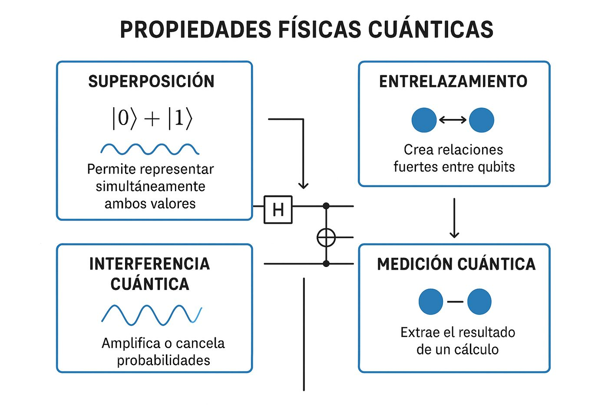
Bit vs qubit
Un bit es un interruptor: apagado (0) o encendido (1).
Un qubit puede ser 0, 1 o una combinación ponderada de los dos a la vez:
- α, β: amplitudes de probabilidad.
- |α|²: probabilidad de leer 0. |β|²: probabilidad de leer 1.
- Suman 1 (100 %): al medir siempre sale 0 o 1.
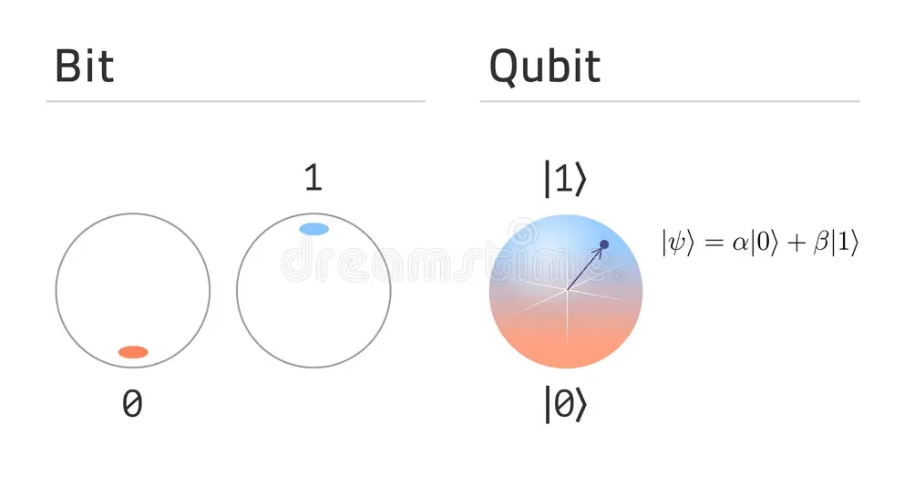
La esfera de Bloch
Representa un qubit como un punto en una esfera de radio 1:
- Polo norte → |0⟩ · Polo sur → |1⟩
- Resto de la superficie → superposiciones
- Interior → estados dañados por el ruido (decoherencia)
El ángulo θ (desde el polo norte) decide las probabilidades: cuanto más baja el vector, más probable es leer 1. El ángulo φ es la fase, clave para la interferencia.
🧪 Simulador: Grok the Bloch Sphere
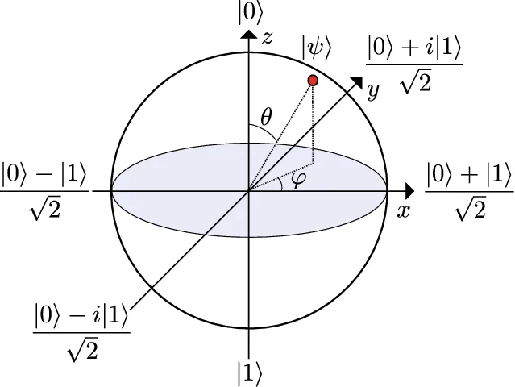
Medición: el qubit "colapsa"
Mientras no lo miramos, el qubit evoluciona de forma ordenada y podemos "moldearlo" con microondas o láseres.
Al medir, la superposición colapsa: obtenemos un único 0 o 1, con probabilidades |α|² y |β|².
Superposición: el electrón no tiene órbita
El modelo de Bohr dibujaba electrones girando como planetas. La mecánica cuántica lo descarta: el electrón está "repartido" en una nube de probabilidad (orbital) y solo al medir aparece en un punto concreto.
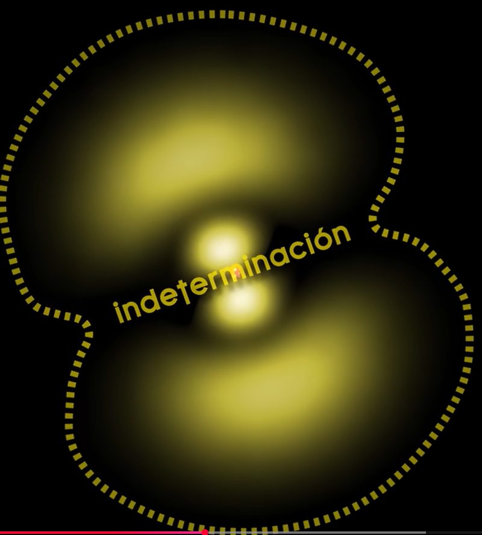
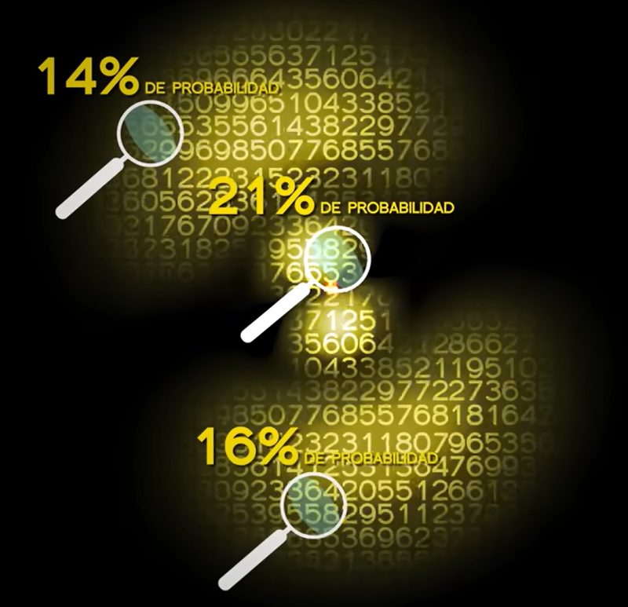
Fuente: Quantum Fracture (YouTube)
n qubits representan 2ⁿ estados a la vez
3 bits pueden guardar 8 combinaciones (000…111), pero solo una cada vez. Para pasar de 101 a 111 hay que cambiar bits uno a uno.
3 qubits pueden estar en superposición de las 8 a la vez:
| Qubits | Estados simultáneos |
|---|---|
| 10 | 1.024 |
| 20 | ≈ 1 millón |
| 50 | ≈ 10¹⁵ |
| 100 | ≈ 10³⁰ |
Cada qubit extra duplica el espacio
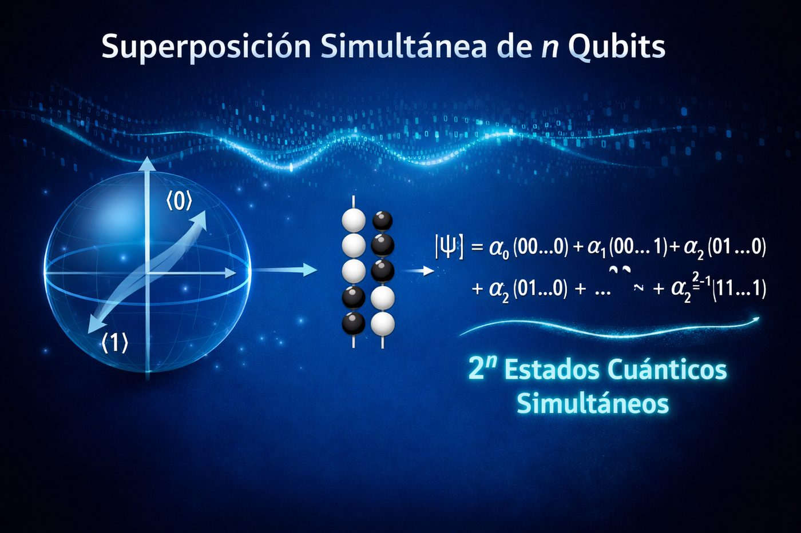
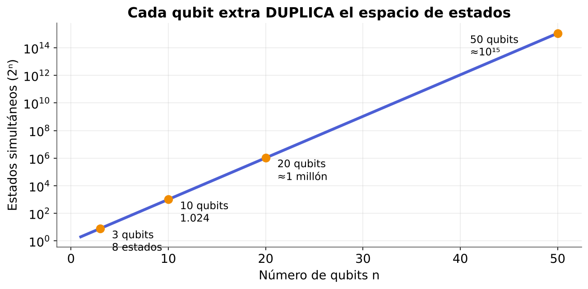
Interferencia: sumar lo correcto, cancelar lo incorrecto
La superposición sola no basta. La ventaja aparece cuando el algoritmo usa la interferencia para cambiar las probabilidades antes de medir:
- Constructiva: las ondas de la respuesta correcta se suman → más probable.
- Destructiva: las de las respuestas incorrectas se cancelan → casi imposibles.
Algoritmos que usan interferencia
Factorizar números enormes
Descompone un número gigante en sus factores primos. La seguridad de RSA se basa en que eso es casi imposible para un ordenador clásico.
Hoy: necesita ordenadores cuánticos mucho mayores que los actuales
Buscar en datos desordenados
Con N elementos, un PC necesita hasta N pasos; Grover, unos √N.
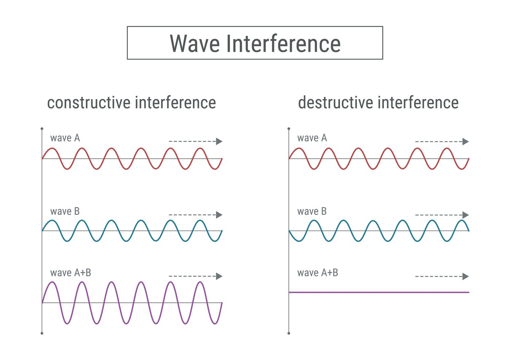
Entrelazamiento
Una correlación cuántica entre qubits: el estado de uno queda ligado al del otro aunque estén lejos. Si medimos uno, sabemos al instante qué vale el otro.
- Imprescindible en algoritmos como Shor y Grover.
- Base de la teleportación cuántica y de comunicaciones seguras.
🧪 Animación interactiva: entanglementqbits.netlify.app
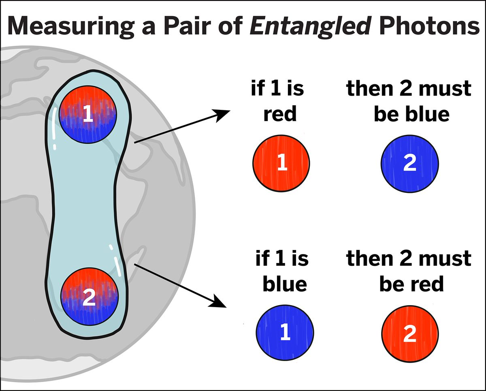
Decoherencia: el enemigo
Es la pérdida del comportamiento cuántico: el qubit deja la superposición y se vuelve un bit clásico.
- A propósito: al medir.
- Por accidente: calor, vibraciones, radiación, campos electromagnéticos.
Los estados cuánticos son extremadamente frágiles. Por eso los qubits superconductores trabajan a ≈ −273 °C (cerca del cero absoluto) dentro de criostatos, aislados de todo.
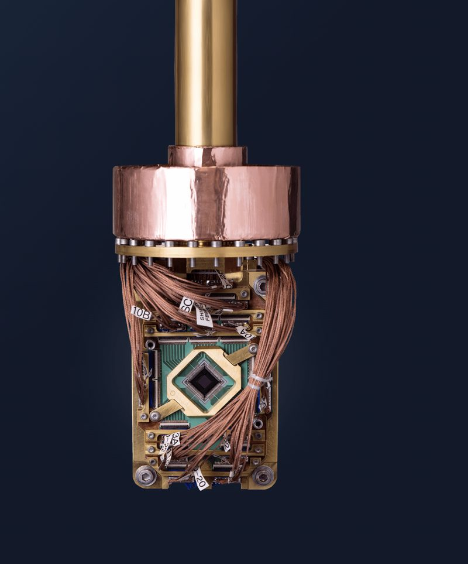
Efecto túnel cuántico
Una partícula cuántica puede atravesar una barrera de energía que clásicamente no podría superar: aparece al otro lado de la montaña sin escalarla.
En optimización imaginamos las soluciones como un paisaje de montañas y valles (altura = coste). El túnel ayuda a escapar de un valle poco profundo (mínimo local) hacia el más profundo (mínimo global).
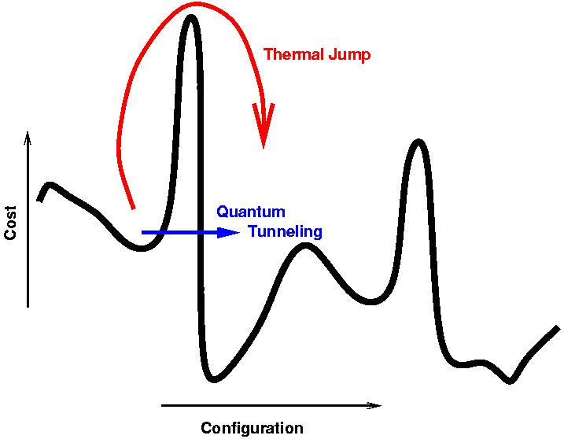
Siete ideas para recordar
| Propiedad | En una frase | ¿Para qué sirve? |
|---|---|---|
| Qubit | 0, 1 o mezcla de ambos | Unidad de información cuántica |
| Superposición | n qubits → 2ⁿ estados a la vez | Explorar muchas soluciones |
| Medición | Colapsa a 0 o 1 con cierta probabilidad | Obtener el resultado |
| Interferencia | Refuerza lo correcto, cancela lo incorrecto | Que la respuesta buena sea la más probable |
| Entrelazamiento | Qubits correlacionados | Algoritmos potentes, comunicaciones seguras |
| Decoherencia | Pérdida de lo cuántico por ruido | El enemigo que hay que combatir |
| Efecto túnel | Atravesar barreras de energía | Escapar de mínimos locales (annealing) |
Preguntas de repaso
- ¿Cuántos estados representa un sistema de 8 qubits? → 2⁸ = 256
- Si |α|² = 0,25, ¿probabilidad de medir 1? → 0,75
- ¿Por qué la superposición sola no da ventaja? → Al medir solo leemos un resultado: hace falta interferencia.
- ¿Qué tiene que ver el túnel con la optimización? → Permite pasar de un mínimo local a uno mejor sin subir la barrera.
Hardware cuántico y estado actual
Qué máquinas existen, cómo se diferencian y en qué punto real está la tecnología.
- Tipos de qubits
- Puertas lógicas vs annealing
- Fabricantes y era NISQ
- Modo híbrido, criptografía y SDK
¿Con qué se fabrica un qubit?
Circuitos sin resistencia a ≈ −273 °C.
rápidos, control preciso criostatos enormes
IBM · Google · Rigetti · D-WaveÁtomos con carga sujetos por campos y controlados con láser.
muy fiables más lentos
Quantinuum · IonQÁtomos colocados con "pinzas" de láser.
escalan bien tecnología joven
Pasqal · QuEraPartículas de luz individuales.
viajan por fibra difícil hacerlos interactuar
Comunicación y criptografía cuánticaUn electrón atrapado en un semiconductor.
fábricas de chips actuales muy experimental
Intel · centros de investigaciónCircuitos CMOS que imitan el annealing.
temperatura ambiente
Fujitsu Digital AnnealerDos modelos de ordenador cuántico
El ordenador cuántico "universal"
- Circuitos de puertas cuánticas.
- Cualquier algoritmo: Shor, Grover, química…
- Decenas o cientos de qubits de alta calidad.
- Muy sensible al ruido.
Especialista en optimización
- Solo busca el mínimo de energía de un problema QUBO.
- Miles de qubits.
- Más tolerante al ruido.
¿Por qué el annealing tiene muchos más qubits?
Solo busca el valle más bajo; no ejecuta cualquier algoritmo.
Cada qubit habla con unos pocos vecinos (topologías Pegasus, Zephyr): más fácil de fabricar a gran escala.
Aunque haya ruido, el sistema tiende a caer hacia el mínimo.
Principales fabricantes (2025–2026)
| Proveedor | Modelo | Chip / familia | Qubits aprox. | Tecnología | Uso principal |
|---|---|---|---|---|---|
| IBM | Puertas | Heron r2 · Nighthawk · Condor | 156 · 120 · 1.121* | Superconductores | I+D, química, algoritmos |
| Puertas | Willow | 105 | Superconductores | Corrección de errores | |
| Quantinuum | Puertas | Helios (antes H2) | 98 (H2: 56) | Iones atrapados | Máxima fidelidad |
| IonQ | Puertas | Forte / Tempo | 36 – 64 (#AQ) | Iones atrapados | Aplicaciones comerciales |
| Rigetti | Puertas | Ankaa-3 / Cepheus | 84 – 108 | Superconductores | Algoritmos híbridos |
| Pasqal | Puertas / analógico | Átomos neutros | 100 – 1.000 | Átomos + láser | Simulación de materiales |
| D-Wave | Annealing | Advantage · Advantage2 | 5.000+ · 4.400+ | Superconductores | Optimización |
| Fujitsu | Digital Annealer | DA 4ª generación | 100.000 bits digitales | CMOS (no cuántico) | Optimización masiva |
* Condor fue una demostración de escala. El sector cambia cada pocos meses: comprueba las cifras en la web de cada fabricante.
Las máquinas de annealing
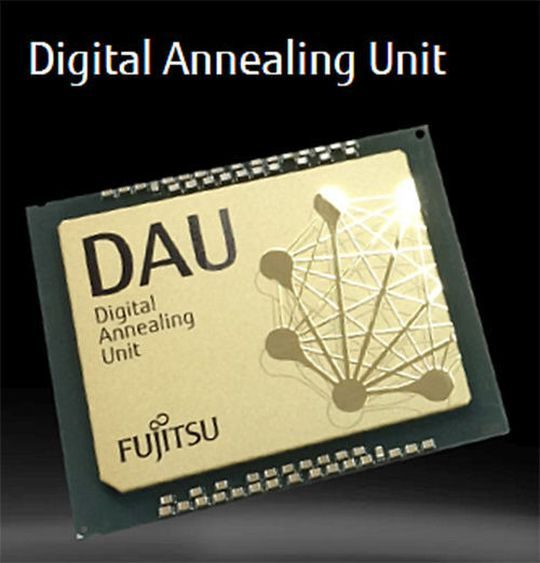
Fujitsu Digital Annealer
- Circuitos digitales que imitan el annealing: no usa qubits.
- Funciona a temperatura ambiente.
- Hasta 100.000 variables conectadas todas con todas (all-to-all).
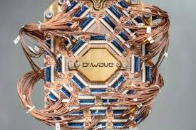
D-Wave Advantage2
- Disponible desde mayo de 2025, 4.400+ qubits.
- Topología Zephyr: cada qubit conectado con 20 (antes 15).
- Acceso por la nube Leap.
Era NISQ: dónde estamos de verdad
NISQ = Noisy Intermediate-Scale Quantum: ordenadores con ruido y tamaño intermedio.
- Ruido: los qubits pierden la información muy rápido.
- Escala: 100–150 qubits es mucho, pero romper claves o diseñar fármacos exigirá miles o millones de qubits con corrección de errores.
El qubit real del chip, con errores.
Qubit fiable hecho con varios físicos + corrección de errores.
Resultados fiables donde un simulador clásico de fuerza bruta no llega.
Mejor, más rápido o más barato que cualquier método clásico conocido.
Modo híbrido: así se usa hoy
🖥️ CPU clásica
- Prepara datos y restricciones
- Construye el modelo
- Analiza y ajusta
⚛️ QPU / Annealer
- Recibe el QUBO
- Búsqueda masiva del mínimo de energía
En ordenadores de puertas
- QAOA: optimización (rutas, logística, finanzas). Es "el QUBO" del modelo de puertas.
- VQE: química, energía de moléculas.
¿Aplicaciones reales?
- Logística: rutas de tráfico (Volkswagen con D-Wave).
- Finanzas: carteras con miles de activos.
- Fármacos: plegamiento de proteínas.
Criptografía en la era cuántica
Shor vs RSA
Un ordenador cuántico grande y tolerante a fallos podría romper RSA y la criptografía de clave pública actual. Todavía no existe.
Distribución cuántica de claves
Envía claves con fotones (protocolo BB84). Si alguien espía, los fotones cambian (teorema de no clonación) y se detecta. Seguridad basada en leyes físicas; requiere hardware especial.
Criptografía post-cuántica
Algoritmos clásicos resistentes a ataques cuánticos (p. ej. basados en retículos). Se instala por software en servidores y navegadores actuales.
Retos pendientes y herramientas de desarrollo
Retos para que sean útiles
- Más qubits por procesador.
- Hardware más pequeño y eficiente (frío, electrónica, consumo).
- Corrección de errores.
- Nuevos algoritmos con ventaja demostrada.
- Software y middleware estables.
- Integración con supercomputación (HPC + QPU).
| Fabricante | SDK | Modelo |
|---|---|---|
| IBM | Qiskit | Puertas |
| Microsoft | Azure Quantum / QDK (Q#) | Puertas / híbrido |
| Cirq | Puertas | |
| D-Wave | Ocean SDK (dimod, dwave-samplers) | Annealing / híbrido |
| Fujitsu | DADK | Digital Annealer |
Todos se programan en Python. En este módulo usamos D-Wave Ocean (dimod): libre, se instala con pip y el modelo se escribe como una fórmula.
Quantum Annealing
Cómo un annealer encuentra la mejor solución de un problema de optimización.
- Recocido y paisaje de energía
- Clásico vs cuántico (simulador)
- Temperatura, iteraciones y runs
- D-Wave vs Fujitsu
Annealing = recocido
En metalurgia, el recocido calienta un metal y lo enfría lentamente: los átomos se ordenan, desaparecen los defectos y el metal queda en su estado de mínima energía.
En computación copiamos la idea:
En el Quantum Annealing el sistema empieza en una gran superposición y evoluciona hacia el estado que representa la solución óptima.
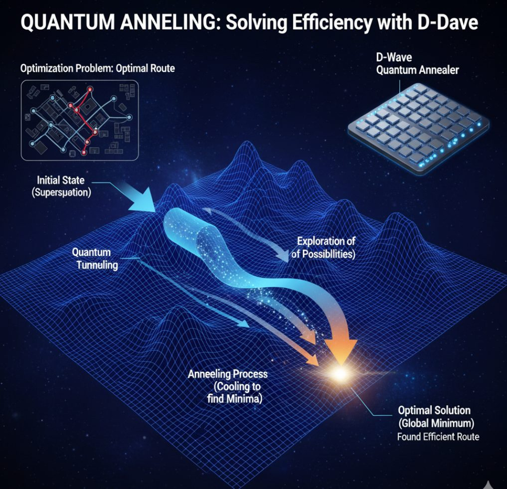
El paisaje de energía
- Cada punto = una solución posible (una combinación de 0 y 1).
- La altura = su energía, es decir, su coste.
- Buscamos el valle más profundo: el mínimo global.
- El peligro: quedarse en un mínimo local, un valle que parece bueno pero no es el mejor.
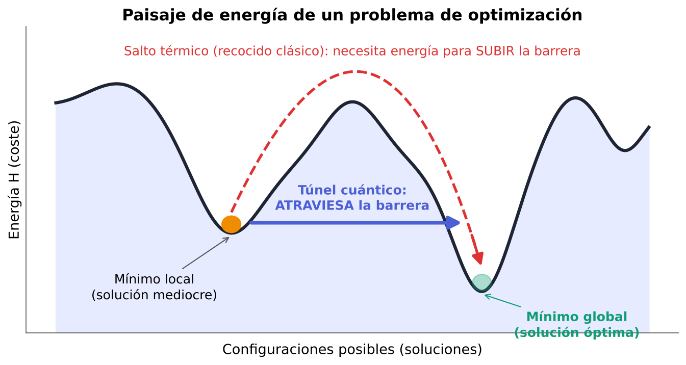
Clásico vs cuántico
- Prueba puntos uno a uno: camina colina abajo.
- Puede quedar atrapado en un valle.
- Para escapar, a veces acepta subir (salto térmico).
- Proceso secuencial.
Un caminante con linterna baja a oscuras; si encuentra un hoyo, cree que ha llegado.
- Empieza en superposición: todo el paisaje a la vez.
- El efecto túnel atraviesa montañas.
- Al enfriar, la probabilidad se concentra en los valles más profundos.
- Al medir, colapsa al más profundo con alta probabilidad.
Una niebla que cubre el terreno y se condensa en el punto más bajo.
| Aspecto | Clásico | Cuántico |
|---|---|---|
| Exploración | Secuencial, aleatoria | Paralela (superposición) |
| Salir de mínimos locales | Saltos térmicos (temperatura) | Efecto túnel |
| Hardware | Cualquier CPU | QPU a ≈ 15 milikelvin |
Pon a prueba el recocido
T inicial muy baja y empezar en el mínimo local: la bola no sale del valle.
Sube la temperatura: a veces acepta subir y salta la barrera. Lanza 20 runs y mira cuántos llegan al global.
Activa "túnel": los saltos ya no tienen que pasar por la cima. Es una simplificación didáctica del efecto túnel.
Recocido simulado por dentro
1. Empezar con bits al azar.
2. Repetir (iteraciones):
a. Proponer cambiar UN bit (0→1 o 1→0)
b. Calcular ΔH (cambio de energía)
c. Si ΔH < 0 → ACEPTAR (mejora)
Si ΔH > 0 → ACEPTAR con
probabilidad e^(−ΔH/T)
d. Bajar un poco la temperatura T
3. Devolver la mejor combinación vista.| T | Comportamiento | Fase |
|---|---|---|
| Alta | Acepta empeorar: sale de valles | Exploración |
| Baja | Solo acepta mejoras: afina | Explotación |
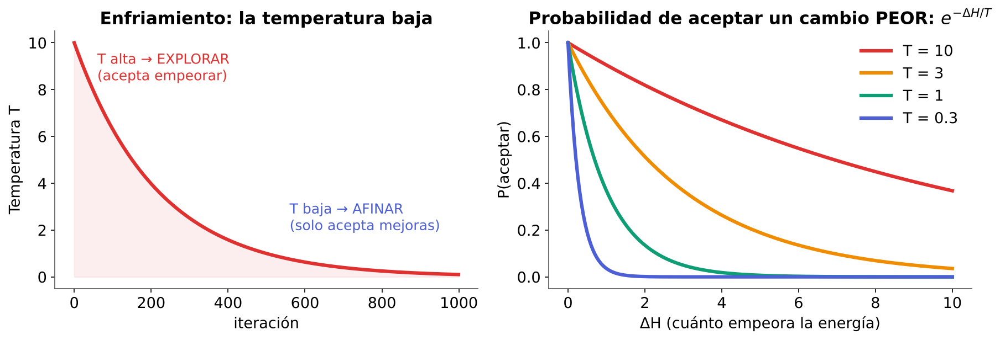
SimulatedAnnealingSampler de D-Wave usan versiones de este algoritmo. La temperatura se ajusta sola.Iteraciones, runs y frecuencia
Iteraciones
Pasos de búsqueda dentro de una ejecución. Más iteraciones = enfriamiento más lento y cuidadoso.
Runs
Ejecuciones independientes, cada una desde un punto al azar. Más runs = más probabilidad de dar con el mínimo global.
Frecuencia
En cuántos runs se llegó a la misma solución. Alta frecuencia = resultado estable.
¿Qué problemas resuelve un annealer?
Optimización combinatoria, a menudo NP-difícil: las combinaciones crecen exponencialmente. Asignar 50 tareas a 50 trabajadores ya supera las 10⁶⁴ posibilidades.
Elegir objetos de más valor sin pasarse de peso.
Inversiones, carga de contenedoresRuta más corta que visite todo y vuelva.
Reparto, brazos robóticosRepartir tareas al mínimo coste.
Turnos, taxis-pasajerosDividir un grafo cortando el máximo de aristas.
Diseño de redesGrupos con pocas conexiones entre sí.
Redes sociales, chipsVecinos sin el mismo color.
Horarios de exámenesMáximo retorno, mínimo riesgo.
Banca, fondosForma 3D de mínima energía.
Nuevos fármacosD-Wave vs Fujitsu Digital Annealer
| D-Wave · Quantum Annealing | Fujitsu · Digital Annealer | |
|---|---|---|
| Hardware | Qubits superconductores reales | Circuitos digitales CMOS |
| Temperatura | ≈ 15 milikelvin | Ambiente |
| Escapa de mínimos locales con | Efecto túnel | Temperatura + offset dinámico |
| Conectividad | Limitada (20 vecinos) → embedding | All-to-all |
| Programación | Ocean SDK (dimod): escribes la fórmula; la librería genera el QUBO | DADK: misma idea, con sus propias clases |
| Acceso | Nube Leap | Nube / on-premise |
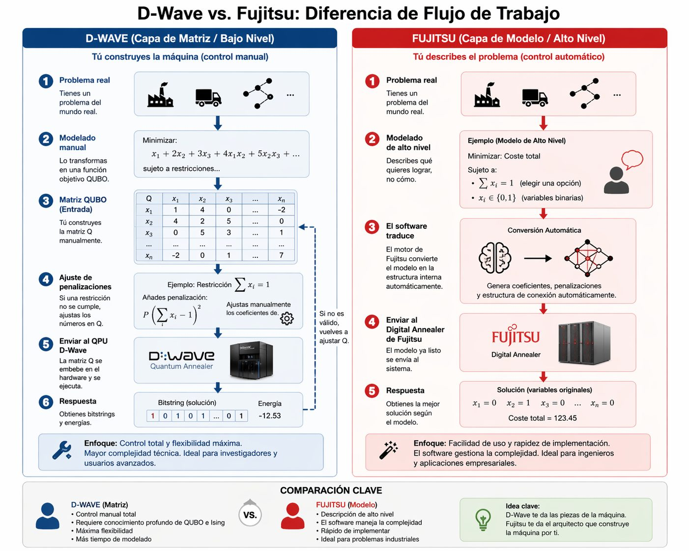
El modelo QUBO
"QUBO es el puente que traduce decisiones de SÍ o NO en un paisaje de energía. El ordenador solo busca el valle más profundo."
- Qué significa y vocabulario
- Receta en 6 pasos
- Ejemplo resuelto a mano
- Matriz Q y elección de la penalización
Quadratic Unconstrained Binary Optimization
Cuadrática
Como mucho productos de dos variables: xᵢ·xⱼ
Sin restricciones
Las restricciones van dentro de la fórmula como penalizaciones
Binaria
Variables que solo valen 0 o 1
Optimización
Se busca siempre el mínimo
Vocabulario básico
Una decisión SÍ/NO: xᵢ ∈ {0, 1}.
Porque 0² = 0 y 1² = 1. Simplifica las fórmulas.
Lo que se optimiza: coste, tiempo, distancia…
Suma energía ("multa") a las soluciones que incumplen una restricción.
Peso de la penalización. Debe ser suficientemente grande.
Energía total = objetivo + penalizaciones. Es lo que se envía al solver.
Valor de H para una combinación. Menor = mejor.
Diagonal: términos lineales. Fuera: interacciones xᵢxⱼ.
Equivalente con variables {−1, +1}. Idioma físico de D-Wave.
La receta: de problema real a QUBO
- Variables: una binaria por cada decisión SÍ/NO.
- Objetivo: QUBO siempre minimiza. Para maximizar un beneficio, se pone en negativo.
- Penalizaciones: cada restricción → P·(restricción)².
- Expandir usando xᵢ² = xᵢ (dimod lo hace solo).
- Matriz Q: la genera la librería; sirve para leer el modelo.
- Resolver y comprobar que la penalización de la solución es 0.
Elegir el mejor proyecto
La respuesta es obvia (A), pero así aprendemos el método que luego usaremos en problemas imposibles de resolver a mano.
Paso 1 · Variables
- x₁ = 1 si elijo A (0 si no)
- x₂ = 1 si elijo B (0 si no)
Paso 2 · Función objetivo
Beneficio total: 3x₁ + 2x₂. Como QUBO minimiza, cambiamos el signo:
Más beneficio → energía más baja.
Paso 3 · Restricción
"Exactamente uno":
Convertir la restricción en penalización
Al elevar al cuadrado, la penalización vale 0 si se cumple y es positiva si no, tanto si nos pasamos como si nos quedamos cortos.
| Caso | x₁+x₂−1 | ² | ×4 |
|---|---|---|---|
| Ninguno (0,0) | −1 | 1 | +4 multa |
| Solo A (1,0) | 0 | 0 | 0 |
| Solo B (0,1) | 0 | 0 | 0 |
| Los dos (1,1) | +1 | 1 | +4 multa |
Construir y expandir el Hamiltoniano
Expandimos con (a + b − c)² = a² + b² + c² + 2ab − 2ac − 2bc y xᵢ² = xᵢ:
El +4 es una constante: no cambia cuál es la mejor solución, solo desplaza todas las energías.
dimod lo guarda exactamente así:
linear = {'A': -7, 'B': -6}
quadratic = {('A', 'B'): 8}
offset = 4Comprobar las 4 combinaciones
| x₁ | x₂ | Cálculo | H | ¿Válida? |
|---|---|---|---|---|
| 0 | 0 | 4 | 4 | no |
| 1 | 0 | −7 + 4 | −3 | mínimo |
| 0 | 1 | −6 + 4 | −2 | sí |
| 1 | 1 | −7 − 6 + 8 + 4 | −1 | no |
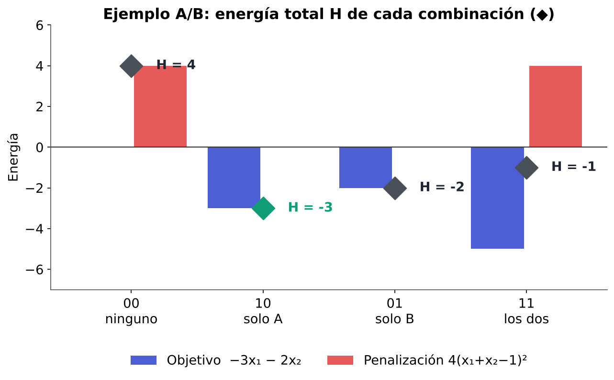
La matriz Q
- Diagonal Qᵢᵢ: coeficientes lineales (−7 y −6). Caben ahí gracias a xᵢ² = xᵢ.
- Fuera de la diagonal Qᵢⱼ: coeficiente de x₁x₂ (8). Se usa la triangular superior.
- Constante (offset): +4, va aparte.
H.linear, H.quadratic). Solo hay que saber leerla.¿Qué pasa si P es demasiado pequeño?
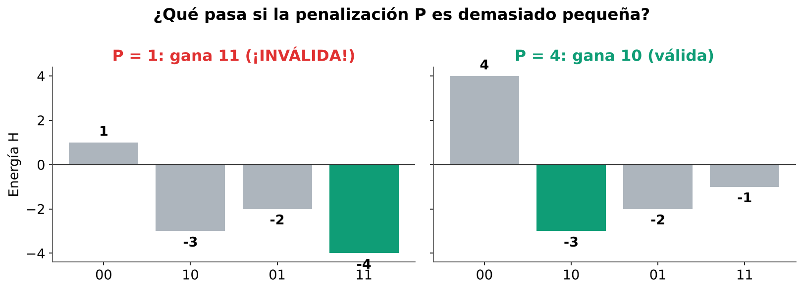
| P | Gana | ¿Válido? |
|---|---|---|
| 1 | 11 (A y B), H = −4 | no |
| 2 | empate 10 / 11, H = −3 | dudoso |
| 4 | 10 (solo A), H = −3 | sí |
Recetario de restricciones y reglas de oro
| Restricción | Penalización |
|---|---|
| Exactamente k de n | P(Σxᵢ − k)² |
| Como mucho uno de dos | P·xᵢ·xⱼ |
| Desigualdad Σwᵢxᵢ ≤ C | P(Σwᵢxᵢ + s − C)²s = y₀ + 2y₁ + 4y₂… (holgura) |
| xᵢ y xⱼ distintos (XOR) | objetivo xᵢ + xⱼ − 2xᵢxⱼ |
| xᵢ y xⱼ iguales | P(xᵢ + xⱼ − 2xᵢxⱼ) |
| Regla | Por qué |
|---|---|
| Variables {0,1} | Lenguaje nativo del hardware |
| Siempre minimizar | max f = min −f |
| Restricción → P·(…)² | 0 si se cumple, positiva si no |
| P > beneficio máximo | Incumplir nunca compensa |
| xᵢ² = xᵢ | Simplifica (DADK lo hace solo) |
| Comprobar penalización = 0 | Solución factible |
Programar QUBO en Python con D-Wave Ocean (dimod)
Del papel al código: escribes la fórmula tal cual y la librería hace el resto.
- Qué es Ocean y qué instalamos
- Las piezas de dimod
- Código completo comentado
- Parámetros del solver y comprobaciones
Las piezas de dimod
Ocean es el conjunto de librerías Python de D-Wave. Es software libre y se instala con pip, sin cuenta:
pip install dimod dwave-samplersdimod: variables binarias, modelo QUBO y fuerza bruta.dwave-samplers: recocido simulado rápido (C++).
| Pieza | Para qué sirve |
|---|---|
dimod.Binary("A") | Variable binaria llamada A (0 o 1) |
+ − * **2 | Se combinan como en papel |
H = objetivo + restriccion | El QUBO (BinaryQuadraticModel); expande y aplica x² = x |
H.linear / H.quadratic / H.offset | Coeficientes y constante |
H.energy(sample) | Energía de una combinación |
dimod.ExactSolver().sample(H) | Fuerza bruta (problemas pequeños) |
SimulatedAnnealingSampler().sample(H, num_reads, num_sweeps) | Recocido simulado: runs × iteraciones |
resultado.first.sample / .energy | Mejor combinación y su energía |
resultado.aggregate() → num_occurrences | Frecuencia de cada solución |
El ejemplo A/B en Python
import dimod
from dwave.samplers import SimulatedAnnealingSampler
# 1. Datos
beneficio_A, beneficio_B = 3, 2
P = 4 # P > max(beneficios)
# 2. Variables binarias
x_A = dimod.Binary("A") # 1 si elijo A
x_B = dimod.Binary("B") # 1 si elijo B
# 3. Objetivo (maximizar → minimizar el negativo)
objetivo = -beneficio_A * x_A - beneficio_B * x_B
# 4. Penalización: exactamente uno
restriccion = P * (x_A + x_B - 1) ** 2
# 5. Hamiltoniano (el QUBO)
H = objetivo + restriccion
print(dict(H.linear), dict(H.quadratic), H.offset)
# 6. Resolver (10 runs de 100 iteraciones)
sampler = SimulatedAnnealingSampler()
resultado = sampler.sample(H, num_reads=10, num_sweeps=100)
# 7. Interpretar
mejor = resultado.first
cfg = mejor.sample # {'A': 1, 'B': 0}
print("A:", cfg["A"], "B:", cfg["B"])
print("Energía:", mejor.energy) # -3.0
print("Penalización:", restriccion.energy(cfg)) # 0.0Salida del programa:
{'A': -7.0, 'B': -6.0} {('B', 'A'): 8.0} 4.0
A: 1 B: 0
Energía: -3.0
Penalización: 0.0Y con fuerza bruta, print(dimod.ExactSolver().sample(H)):
A B energy num_oc.
1 1 0 -3.0 1
2 0 1 -2.0 1
3 1 1 -1.0 1
0 0 0 4.0 1Cómo busca el solver: los parámetros
El solver no calcula que 3 es mayor que 2. Convierte las opciones en un paisaje de energía: la mejor solución (elegir A, −3) es el valle más profundo y la segunda (elegir B, −2) un valle algo menos profundo.
Después lanza una "canica" que rueda por ese paisaje mientras la temperatura baja, como en el recocido de la unidad 3.
| Combinación | 00 | 10 (A) | 01 (B) | 11 |
|---|---|---|---|---|
| Energía | 4 | −3 | −2 | −1 |
Con 2 variables solo hay 4 "puntos" en el paisaje; en problemas reales hay millones.
Cuántas veces se lanza la canica desde un punto al azar. Con num_reads=10 hay 10 intentos independientes; en el ejemplo A/B los 10 acaban en el valle de A, así que A aparece 10 veces.
Cuántos pasos da la canica en cada intento. En un sweep el algoritmo revisa cada variable una vez: "¿mejora si cambio A?", "¿y si cambio B?". Para 2 variables, 100 sweeps sobran: encuentra A en los primeros pasos y el resto confirma que no hay un valle mejor.
β = 1/T. Al principio (T alta) la canica puede subir a soluciones peores, como B, para no quedarse atascada; al final (T baja) solo baja y se asienta. Si no se indica, se calcula sola a partir de los coeficientes.
El punto de salida y los saltos son aleatorios. Con seed=42 los números "aleatorios" son siempre los mismos: mismo resultado en cada ejecución, útil para corregir prácticas.
Comprobar el resultado
resultado = SimulatedAnnealingSampler().sample(H, num_reads=10, num_sweeps=100, seed=42)
mejor = resultado.first # menor energía
print(mejor.sample, mejor.energy) # {'A': 1, 'B': 0} -3.0
print(restriccion.energy(mejor.sample)) # 0.0 → cumple
print(resultado.aggregate().first.num_occurrences) # 10 → en los 10 intentosrestriccion.energy(cfg) == 0. Si no es 0, la solución incumple alguna restricción.
Con penalización 0, la energía es −beneficio o el coste. Léela en voz alta: "se elige A, beneficio 3".
Sube P. Si aun así falla, sube num_sweeps o num_reads.
dimod.ExactSolver().sample(H) prueba todas las combinaciones y da el óptimo exacto para comparar.Del problema al código
| Problema real | QUBO | dimod |
|---|---|---|
| "¿Elegir A o B?" | x_A, x_B ∈ {0,1} | dimod.Binary("A"), dimod.Binary("B") |
| "maximizar beneficio" | −(3x_A + 2x_B) | -3*x_A - 2*x_B |
| "solo uno" | P·(x_A + x_B − 1)² | P * (x_A + x_B - 1)**2 |
| "resolver" | minimizar H | sampler.sample(H, num_reads=10) |
| "leer resultado" | bits de la solución | resultado.first.sample |
Term(1, 0) por dimod.Binary("A"), QUBOSolverCPU(number_runs, number_iterations) por SimulatedAnnealingSampler().sample(H, num_reads, num_sweeps). Lo importante es la formulación QUBO, que es la misma.Preguntas de repaso
- ¿Qué devuelve
dimod.Binary("A")? → Una variable binaria que se suma y multiplica como en papel. - ¿Para qué sirve
ExactSolver? → Fuerza bruta: exacto, pero inviable a partir de ~20 variables. num_readsvsnum_sweeps→ runs independientes vs iteraciones dentro de cada run.- Si
restriccion.energy(cfg)vale 4… → la solución incumple una restricción.
Glosario
Prácticas: entorno y simulador
Montar un entorno Python, resolver QUBO en local y practicar con 6 ejercicios guiados.
- Práctica 0: preparar el entorno y tabla de comandos
- Simulador QUBO en el navegador
- Método de 7 pasos
- 5 ejercicios guiados + 1 de ampliación, con código comentado
- Descargas, plantilla de entrega y rúbrica
Preparar el entorno de programación
Un único entorno para todo el módulo: Python + dimod + dwave-samplers. Software libre, se instala con pip. Python es interpretado: no se compila, se ejecuta con python archivo.py.
Python y editor
- Python 3.11 o 3.12 desde python.org. En Windows marca Add python.exe to PATH.
- VS Code con las extensiones Python y Jupyter.
Entorno virtual
Aísla las librerías del proyecto, como un contenedor aísla una aplicación. Se crea una vez y se activa en cada terminal nueva: el prompt muestra (qubo).
Librerías
pip install dimod dwave-samplers
pip install matplotlib networkxdimod: modelo QUBO y fuerza bruta · dwave-samplers: recocido rápido · matplotlib/networkx: gráficos (ej. 4 y 7).
!pip install dimod dwave-samplers, y pega el código de cada ejercicio en una celda.pip install dwave-ocean-sdk y una cuenta en D-Wave Leap permiten enviar el mismo modelo a una QPU.Tabla de comandos: Windows y Linux
| Acción | Windows (PowerShell) | Linux / macOS (bash) |
|---|---|---|
| Comprobar Python | python --version | python3 --version |
| Instalar Python si falta | python.org (marcar Add to PATH) | sudo apt install python3 python3-venv python3-pip |
| Carpeta del proyecto | mkdir quantum-annealing; cd quantum-annealing | mkdir quantum-annealing && cd quantum-annealing |
| Crear entorno virtual | python -m venv qubo | python3 -m venv qubo |
| Activar entorno | .\qubo\Scripts\Activate.ps1 · CMD: qubo\Scripts\activate.bat | source qubo/bin/activate |
| Si PowerShell lo bloquea | Set-ExecutionPolicy -Scope CurrentUser RemoteSigned | — |
| Actualizar pip | python -m pip install --upgrade pip | |
| Instalar librerías | pip install dimod dwave-samplers matplotlib networkx | |
| Ver librerías instaladas | pip list | |
| Ejecutar un ejercicio | python ejercicio1_beneficio.py | |
| Guardar la salida | python ejercicio1_beneficio.py > salida.txt | |
| Abrir VS Code aquí | code . | |
| Jupyter (opcional) | pip install jupyter ipykernel → jupyter notebook | |
| Desactivar entorno | deactivate | |
Prueba de funcionamiento
"""Práctica 0 (opción D-Wave) — comprobación del entorno."""
import sys, dimod
from dwave.samplers import SimulatedAnnealingSampler
print("Python", sys.version.split()[0], "| dimod", dimod.__version__)
a, b = dimod.Binary("A"), dimod.Binary("B")
H = -3*a - 2*b + 4*(a + b - 1)**2
print("H lineal:", dict(H.linear), "| cuadrático:", dict(H.quadratic), "| offset:", H.offset)
sol = SimulatedAnnealingSampler().sample(H, num_reads=4).first
print("Mejor:", sol.sample, "Energía:", sol.energy)Ejecuta python prueba_entorno.py. Salida esperada:
Python 3.12.x | dimod 0.12.x
H lineal: {'A': -7.0, 'B': -6.0} | cuadrático: {('B', 'A'): 8.0} | offset: 4.0
Mejor: {'A': 1, 'B': 0} Energía: -3.0(qubo) en el prompt) y repite pip install dimod dwave-samplers.Laboratorio QUBO en el navegador
Cómo resolver cualquier ejercicio: 7 pasos
Todos los ejercicios siguen la misma plantilla. El código está dividido en estos bloques, con comentarios en cada uno.
| Ejercicio | Variables | Qué se practica |
|---|---|---|
| 1 · Elegir proyecto | 2 | Maximizar en negativo y "exactamente uno" |
| 2 · Servidores encendidos | 4 | Minimizar un coste y "exactamente K" |
| 3 · Reparto de tareas | 6 | Una restricción por cada tarea |
| 4 · Equilibrar VMs | 4 | Objetivo al cuadrado, sin restricciones |
| 5 · Max-Cut | 7 | Fórmula de "distintos" (XOR) en un grafo |
| 6 · Max-Cut N nodos ampliación | N | Qué pasa cuando el problema crece |
Elegir el proyecto con más beneficio
Solo podemos hacer uno de dos proyectos: A (beneficio 3) o B (beneficio 2).
| Variables | x_A, x_B (1 = lo elijo) |
| Objetivo | −3·x_A − 2·x_B (maximizar → en negativo) |
| Restricción | 4·(x_A + x_B − 1)² (exactamente uno) |
Código completo · ejercicio1_beneficio.py
"""
Ejercicio 1 · Elegir el proyecto con más beneficio (2 variables)
============================================================================
Tenemos dos proyectos y solo podemos hacer UNO:
Proyecto A → beneficio 3
Proyecto B → beneficio 2
¿Cuál elegimos? (La respuesta es obvia: A. Sirve para aprender el método.)
Ejecutar: python ejercicio1_beneficio.py
"""
import dimod
from dwave.samplers import SimulatedAnnealingSampler
# ── 1. DATOS ────────────────────────────────────────────────────────────
beneficio_A = 3
beneficio_B = 2
P = 4 # peso de la penalización: mayor que el beneficio máximo (3)
# ── 2. VARIABLES BINARIAS: una por cada decisión SÍ/NO ─────────────────
x_A = dimod.Binary("A") # vale 1 si elijo el proyecto A, 0 si no
x_B = dimod.Binary("B") # vale 1 si elijo el proyecto B, 0 si no
# ── 3. OBJETIVO ─────────────────────────────────────────────────────────
# Queremos MAXIMIZAR el beneficio, pero el solver siempre MINIMIZA.
# Truco: lo escribimos en negativo → más beneficio = energía más baja.
objetivo = -beneficio_A * x_A - beneficio_B * x_B
# ── 4. RESTRICCIÓN → PENALIZACIÓN ───────────────────────────────────────
# "Exactamente uno": x_A + x_B = 1
# Al elevar al cuadrado vale 0 si se cumple y algo positivo si no.
restriccion = P * (x_A + x_B - 1) ** 2
# ── 5. HAMILTONIANO H = objetivo + penalización (esto es el QUBO) ───────
H = objetivo + restriccion
print("Modelo QUBO generado por dimod:")
print(" lineal :", dict(H.linear)) # {'A': -7.0, 'B': -6.0}
print(" cuadrático:", dict(H.quadratic)) # {('B', 'A'): 8.0}
print(" constante :", H.offset) # 4.0
# ── 6. RESOLVER ─────────────────────────────────────────────────────────
# Con solo 2 variables podemos ver TODAS las combinaciones (fuerza bruta):
print("\nTodas las combinaciones, de mejor a peor:")
print(dimod.ExactSolver().sample(H))
# Y con el recocido simulado (lo que usaríamos en problemas grandes):
sampler = SimulatedAnnealingSampler()
resultado = sampler.sample(H, num_reads=10, seed=42) # 10 intentos
# ── 7. INTERPRETAR Y COMPROBAR ──────────────────────────────────────────
mejor = resultado.first # la muestra con menor energía
cfg = mejor.sample # diccionario, p. ej. {'A': 1, 'B': 0}
print("\nMejor solución:", cfg)
if cfg["A"] == 1:
print("→ Se elige el proyecto A")
if cfg["B"] == 1:
print("→ Se elige el proyecto B")
print("Energía:", mejor.energy, "(= −beneficio)")
print("Penalización:", restriccion.energy(cfg), "(0 = cumple la restricción)")Retos
- Cambia
Pa 1, 2 y 4. ¿Qué solución sale? → P=1: los dos (inválido) · P=2: empate · P=4: A. - Añade un proyecto C con beneficio 5. ¿Qué P usarías? → P = 6 (mayor que 5). Sale C.
Dejar encendidos 2 de 4 servidores
Por la noche bastan 2 servidores. ¿Cuáles dejamos encendidos para consumir lo mínimo?
| Servidor | S1 | S2 | S3 | S4 |
|---|---|---|---|---|
| Consumo (W) | 120 | 90 | 150 | 80 |
| Variables | x_S1 … x_S4 (1 = encendido) |
| Objetivo | 120·x_S1 + 90·x_S2 + 150·x_S3 + 80·x_S4 (ya es minimizar) |
| Restricción | 500·(x_S1 + x_S2 + x_S3 + x_S4 − 2)² |
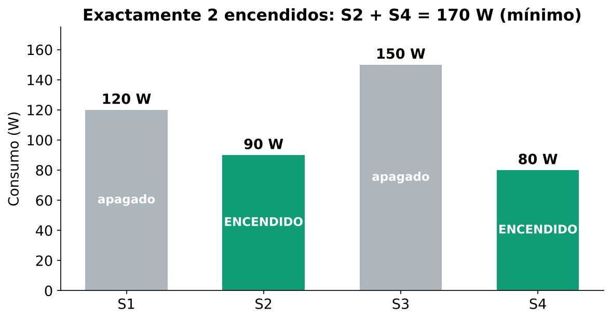
Código completo · ejercicio2_servidores.py
"""
Ejercicio 2 · Dejar encendidos 2 de 4 servidores (4 variables)
============================================================================
Por la noche solo hacen falta 2 servidores encendidos.
Queremos elegir EXACTAMENTE 2 con el menor consumo total.
Servidor Consumo (W)
S1 120
S2 90
S3 150
S4 80
Ejecutar: python ejercicio2_servidores.py
"""
import dimod
from dwave.samplers import SimulatedAnnealingSampler
# ── 1. DATOS ────────────────────────────────────────────────────────────
consumo = {"S1": 120, "S2": 90, "S3": 150, "S4": 80}
K = 2 # cuántos servidores deben quedar encendidos
P = 500 # penalización: mayor que la suma de todos los consumos (440)
# ── 2. VARIABLES BINARIAS: una por servidor ─────────────────────────────
# x["S1"] = 1 → S1 encendido ; 0 → apagado
x = {s: dimod.Binary(s) for s in consumo}
# ── 3. OBJETIVO: consumo total de los encendidos ────────────────────────
# Ya es algo que queremos MINIMIZAR, así que no hace falta signo negativo.
objetivo = sum(consumo[s] * x[s] for s in consumo)
# ── 4. RESTRICCIÓN: exactamente K encendidos ────────────────────────────
# x_S1 + x_S2 + x_S3 + x_S4 = 2 → P · (suma − 2)²
encendidos = sum(x.values())
restriccion = P * (encendidos - K) ** 2
# ── 5. HAMILTONIANO ─────────────────────────────────────────────────────
H = objetivo + restriccion
# ── 6. RESOLVER ─────────────────────────────────────────────────────────
resultado = SimulatedAnnealingSampler().sample(H, num_reads=20, seed=42)
# ── 7. INTERPRETAR Y COMPROBAR ──────────────────────────────────────────
cfg = resultado.first.sample
elegidos = [s for s in consumo if cfg[s] == 1]
print("Servidores encendidos:", elegidos)
print("Consumo total:", objetivo.energy(cfg), "W")
print("Penalización:", restriccion.energy(cfg), "(0 = hay exactamente", K, "encendidos)")Retos
- Pon
K = 3. → S1 + S2 + S4 = 290 W. - Pon
P = 50. ¿Qué pasa? → Sale solo S4 (80 + 50 = 130 < 170): ¡inválido! P era demasiado pequeño.
Repartir tareas entre dos técnicos
| Horas | Ana | Beñat |
|---|---|---|
| DNS | 4 | 5 |
| VLAN | 6 | 2 |
| Backup | 3 | 7 |
| Variables | una por pareja: x(Ana,DNS), x(Beñat,DNS)… → 6 |
| Objetivo | Σ horas · x (ya es minimizar) |
| Restricción | por cada tarea: 20·(x(Ana,t) + x(Beñat,t) − 1)² |
Hay tres restricciones, una por tarea; se suman todas.
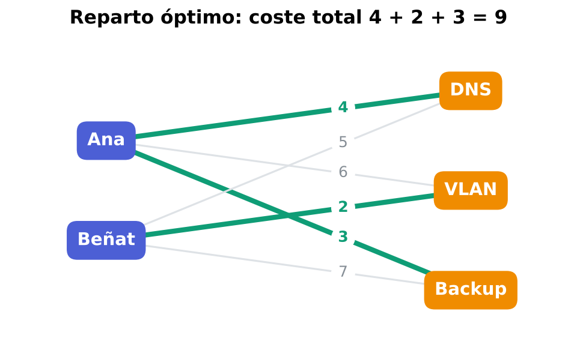
Código completo · ejercicio3_tareas.py
"""
Ejercicio 3 · Repartir tareas entre dos técnicos (6 variables)
============================================================================
Hay 3 tareas y 2 técnicos. Cada tarea la hace UNA persona.
Queremos el reparto con menos horas en total.
Horas Ana Beñat
DNS 4 5
VLAN 6 2
Backup 3 7
Ejecutar: python ejercicio3_tareas.py
"""
import dimod
from dwave.samplers import SimulatedAnnealingSampler
# ── 1. DATOS ────────────────────────────────────────────────────────────
personas = ["Ana", "Beñat"]
tareas = ["DNS", "VLAN", "Backup"]
horas = {
("Ana", "DNS"): 4, ("Ana", "VLAN"): 6, ("Ana", "Backup"): 3,
("Beñat", "DNS"): 5, ("Beñat", "VLAN"): 2, ("Beñat", "Backup"): 7,
}
P = 20 # penalización: mayor que cualquier coste de la tabla (7)
# ── 2. VARIABLES BINARIAS: una por cada pareja (persona, tarea) ─────────
# x[("Ana", "DNS")] = 1 → Ana hace la tarea DNS
x = {}
for p in personas:
for t in tareas:
x[(p, t)] = dimod.Binary(f"{p}-{t}")
# ── 3. OBJETIVO: horas totales del reparto ──────────────────────────────
objetivo = sum(horas[k] * x[k] for k in x)
# ── 4. RESTRICCIÓN: cada tarea la hace exactamente una persona ──────────
# Para DNS: x(Ana,DNS) + x(Beñat,DNS) = 1 → (… − 1)²
# y lo mismo para VLAN y Backup. Sumamos las tres penalizaciones.
restriccion = 0
for t in tareas:
personas_en_t = x[("Ana", t)] + x[("Beñat", t)]
restriccion = restriccion + P * (personas_en_t - 1) ** 2
# ── 5. HAMILTONIANO ─────────────────────────────────────────────────────
H = objetivo + restriccion
# ── 6. RESOLVER ─────────────────────────────────────────────────────────
resultado = SimulatedAnnealingSampler().sample(H, num_reads=20, seed=42)
# ── 7. INTERPRETAR Y COMPROBAR ──────────────────────────────────────────
cfg = resultado.first.sample
for t in tareas:
for p in personas:
if cfg[f"{p}-{t}"] == 1:
print(f"{t:7s} → {p}")
print("Horas totales:", objetivo.energy(cfg))
print("Penalización:", restriccion.energy(cfg), "(0 = cada tarea tiene una persona)")Retos
- Si Beñat tardase 9 h en VLAN… → todo para Ana: 13 h.
- Añade a Carla con 3 h en todo (y su línea en la restricción). → DNS pasa a Carla: 8 h.
Equilibrar máquinas virtuales entre dos hosts
4 VMs con 3, 5, 6 y 10 GB de RAM (24 GB). ¿Cómo las repartimos entre los hosts A y B para que queden lo más igualados posible?
| Variables | x_VM = 1 → host A · 0 → host B |
| RAM en A | 3·x₁ + 5·x₂ + 6·x₃ + 10·x₄ |
| Diferencia | RAM_A − RAM_B = 2·RAM_A − 24 |
| H | (2·RAM_A − 24)² (0 si es perfecto) |
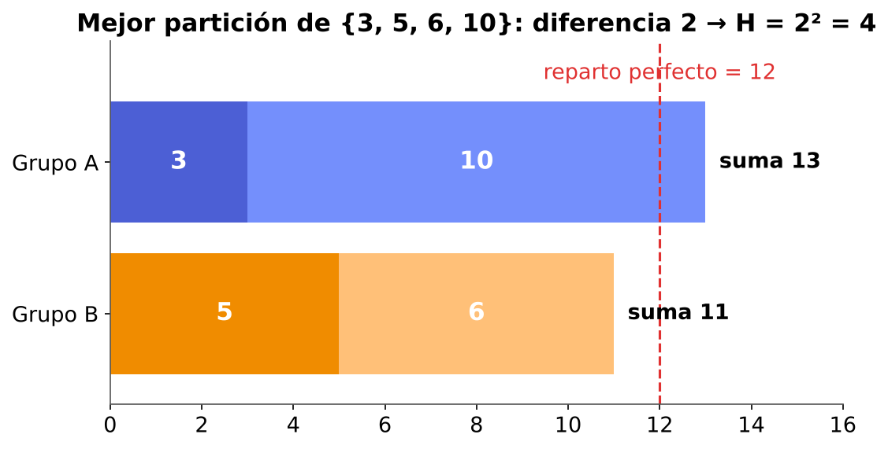
Código completo · ejercicio4_particion.py
"""
Ejercicio 4 · Equilibrar máquinas virtuales entre dos hosts (4 variables)
============================================================================
Tenemos 4 máquinas virtuales con esta RAM: 3, 5, 6 y 10 GB (total 24 GB).
Queremos repartirlas en dos hosts (A y B) con la RAM lo más igualada posible.
Lo ideal sería 12 GB en cada uno.
Este problema NO tiene restricciones: solo función objetivo.
Ejecutar: python ejercicio4_particion.py
"""
import dimod
from dwave.samplers import SimulatedAnnealingSampler
# ── 1. DATOS ────────────────────────────────────────────────────────────
ram = {"VM1": 3, "VM2": 5, "VM3": 6, "VM4": 10}
total = sum(ram.values()) # 24
# ── 2. VARIABLES BINARIAS: una por máquina ──────────────────────────────
# x["VM1"] = 1 → VM1 va al host A ; 0 → va al host B
x = {vm: dimod.Binary(vm) for vm in ram}
# ── 3. OBJETIVO ─────────────────────────────────────────────────────────
# RAM del host A = suma de las VMs con x = 1
ram_A = sum(ram[vm] * x[vm] for vm in ram)
# Diferencia entre hosts = ram_A − ram_B = ram_A − (total − ram_A) = 2·ram_A − total
# La elevamos al cuadrado: siempre ≥ 0 y vale 0 si el reparto es perfecto.
H = (2 * ram_A - total) ** 2
# ── 4. (sin restricciones) ──────────────────────────────────────────────
# ── 5. H ya está construido ─────────────────────────────────────────────
# ── 6. RESOLVER ─────────────────────────────────────────────────────────
resultado = SimulatedAnnealingSampler().sample(H, num_reads=20, seed=42)
# ── 7. INTERPRETAR ──────────────────────────────────────────────────────
cfg = resultado.first.sample
host_A = [vm for vm in ram if cfg[vm] == 1]
host_B = [vm for vm in ram if cfg[vm] == 0]
gb_A = sum(ram[vm] for vm in host_A)
print("Host A:", host_A, "→", gb_A, "GB")
print("Host B:", host_B, "→", total - gb_A, "GB")
print("Diferencia:", abs(2 * gb_A - total), "GB | Energía:", resultado.first.energy)Retos
- RAM {4, 5, 6, 7, 8} GB. → {7, 8} y {4, 5, 6}: 15 / 15, energía 0.
- RAM {2, 4, 6, 8, 12} GB. → {4, 12} y {2, 6, 8}: 16 / 16.
Max-Cut: dividir una red en dos grupos
7 equipos y 10 conexiones. Queremos que el máximo de conexiones quede entre grupos distintos.
| Variables | x_i = 0 → grupo A · 1 → grupo B |
| Arista cortada | x_i + x_j − 2·x_i·x_j (1 si son distintos) |
| H | −(suma de aristas cortadas) |
| x_i | x_j | x_i + x_j − 2·x_i·x_j |
|---|---|---|
| 0 | 0 | 0 |
| 0 | 1 | 1 |
| 1 | 0 | 1 |
| 1 | 1 | 0 |
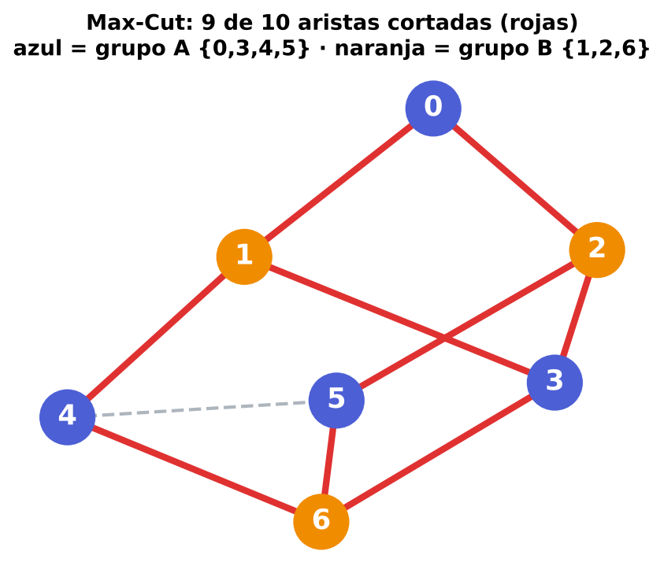
Código completo · ejercicio5_maxcut.py
"""
Ejercicio 5 · Max-Cut: dividir una red en dos grupos (7 variables)
============================================================================
Una red de 7 equipos. Queremos separarlos en dos grupos (A y B) de forma
que el MÁXIMO número de conexiones (aristas) quede entre grupos distintos.
Este problema NO tiene restricciones: solo función objetivo.
Ejecutar: python ejercicio5_maxcut.py
"""
import dimod
from dwave.samplers import SimulatedAnnealingSampler
# ── 1. DATOS: las conexiones de la red ──────────────────────────────────
aristas = [(0, 1), (0, 2), (1, 3), (1, 4), (2, 3),
(2, 5), (3, 6), (4, 5), (4, 6), (5, 6)]
n = 7
# ── 2. VARIABLES BINARIAS: una por nodo ─────────────────────────────────
# x[i] = 0 → nodo i en el grupo A ; x[i] = 1 → nodo i en el grupo B
x = [dimod.Binary(i) for i in range(n)]
# ── 3. OBJETIVO ─────────────────────────────────────────────────────────
# Una arista (i, j) está "cortada" si sus nodos están en grupos distintos.
# x_i + x_j − 2·x_i·x_j vale 1 si x_i ≠ x_j y 0 si son iguales.
# Queremos MAXIMIZAR las cortadas → minimizamos su negativo.
H = 0
for i, j in aristas:
cortada = x[i] + x[j] - 2 * x[i] * x[j]
H = H - cortada
# ── 4-5. (sin restricciones: H ya está construido) ─────────────────────
# ── 6. RESOLVER ─────────────────────────────────────────────────────────
resultado = SimulatedAnnealingSampler().sample(H, num_reads=20, seed=42)
# ── 7. INTERPRETAR ──────────────────────────────────────────────────────
cfg = resultado.first.sample
grupo_A = [i for i in range(n) if cfg[i] == 0]
grupo_B = [i for i in range(n) if cfg[i] == 1]
cortadas = [(i, j) for i, j in aristas if cfg[i] != cfg[j]]
print("Grupo A:", grupo_A)
print("Grupo B:", grupo_B)
print("Aristas cortadas:", len(cortadas), "de", len(aristas))
print("Energía:", resultado.first.energy, "(= −aristas cortadas)")Retos
- ¿Por qué salen dos soluciones con la misma energía? → Intercambiar A y B da el mismo corte.
- Quita la arista (4, 5). → Se cortan las 9.
Max-Cut con N nodos: cuando el problema crece
El mismo código del ejercicio 5, pero con una red aleatoria del tamaño que elijas. Pide N, resuelve, compara con la fuerza bruta (si N ≤ 16) y dibuja la red.
pip install networkx matplotlib
python ejercicio6_maxcut_n_nodos.py
Número de nodos (3-60, Enter = 12): 20Con 30 nodos hay más de mil millones de combinaciones.
Crece suave: depende de nodos y aristas, no de 2ⁿ.
¿Cuántos de los 100 llegan al mejor corte?
Código completo · ejercicio6_maxcut_n_nodos.py
"""
Ejercicio 6 (ampliación) · Max-Cut con N nodos (N variables)
============================================================================
El mismo problema del ejercicio 5, pero con una red aleatoria del tamaño
que tú elijas. Sirve para ver qué pasa cuando el problema crece:
· el número de combinaciones posibles es 2^N (crece muchísimo)
· el modelo QUBO solo tiene N variables y una interacción por arista
Necesita: pip install networkx matplotlib
Ejecutar: python ejercicio6_maxcut_n_nodos.py
"""
import time
import dimod
import networkx as nx
import matplotlib.pyplot as plt
from dwave.samplers import SimulatedAnnealingSampler
# ── 1. DATOS: pedir N y crear una red aleatoria ─────────────────────────
texto = input("Número de nodos (3-60, Enter = 12): ").strip()
n = int(texto) if texto else 12
G = nx.erdos_renyi_graph(n, 0.5, seed=1) # cada conexión existe con prob. 0,5
print(f"Red: {n} nodos, {G.number_of_edges()} aristas")
print(f"Combinaciones posibles: 2^{n} = {2**n:,}")
# ── 2. VARIABLES: una por nodo (0 → grupo A, 1 → grupo B) ───────────────
x = [dimod.Binary(i) for i in range(n)]
# ── 3. OBJETIVO: −(aristas cortadas), igual que en el ejercicio 5 ───────
H = 0
for i, j in G.edges():
H = H - (x[i] + x[j] - 2 * x[i] * x[j])
# ── 6. RESOLVER (y medir el tiempo) ─────────────────────────────────────
inicio = time.time()
resultado = SimulatedAnnealingSampler().sample(H, num_reads=100, seed=42)
segundos = time.time() - inicio
# ── 7. INTERPRETAR ──────────────────────────────────────────────────────
mejor = resultado.first
cfg = mejor.sample
corte = int(-mejor.energy)
print(f"\nMejor corte encontrado: {corte} de {G.number_of_edges()} aristas")
print(f"Tiempo: {segundos:.2f} s para 100 intentos (num_reads)")
# ¿Cuántos de los 100 intentos llegaron a ese mismo corte?
energias = resultado.record.energy
veces = int(sum(resultado.record.num_occurrences[energias == mejor.energy]))
print(f"Intentos que llegaron al mejor corte: {veces} de 100")
# Con pocos nodos podemos comprobar el óptimo por fuerza bruta
if n <= 16:
optimo = int(-dimod.ExactSolver().sample(H).first.energy)
print(f"Óptimo real (fuerza bruta): {optimo} → ",
"¡encontrado!" if optimo == corte else "no alcanzado")
# ── Dibujo: azul = grupo A, naranja = grupo B, rojo = arista cortada ────
colores = ["#4c5fd5" if cfg[i] == 0 else "#f08c00" for i in G.nodes()]
cortadas = [(i, j) for i, j in G.edges() if cfg[i] != cfg[j]]
pos = nx.spring_layout(G, seed=7)
nx.draw_networkx_edges(G, pos, edge_color="#cccccc")
nx.draw_networkx_edges(G, pos, edgelist=cortadas, edge_color="#e03131")
nx.draw_networkx_nodes(G, pos, node_color=colores)
nx.draw_networkx_labels(G, pos, font_color="white")
plt.title(f"Max-Cut {n} nodos: {corte}/{G.number_of_edges()} aristas cortadas")
plt.axis("off")
plt.show()Retos
- Prueba 10, 16, 30 y 60 nodos. Anota tiempo, corte e intentos que aciertan.
- Cambia
num_reads=100por10. ¿Se sigue encontrando el mejor corte con 30 nodos? - Cambia la probabilidad 0,5 por 0,2. ¿Qué porcentaje de aristas se corta ahora?
Descargas y evaluación
| Fichero | Contenido |
|---|---|
prueba_entorno.py | Comprobación del entorno (Práctica 0) |
| 1 · 2 · 3 · 4 · 5 | Ejercicios guiados, código completo y comentado |
ejercicio6_maxcut_n_nodos.py | Ampliación: Max-Cut de N nodos |
extra-profesorado/ | Solo para el profesorado: ejercicios avanzados (mochila, TSP), script Max-Cut original y versión Fujitsu DADK |
Los ficheros están en la carpeta descargas/ del paquete de apuntes (los enlaces los abren como texto). El código completo de cada ejercicio también está en su diapositiva.
Plantilla de entrega (por ejercicio)
- Problema en una frase.
- Variables: qué significa cada bit.
- Objetivo y penalizaciones: fórmula y P elegido.
- Código y salida (captura).
- Comprobación: penalización = 0 y lectura en lenguaje natural.
- Retos razonados.
| Criterio | Peso |
|---|---|
| Entorno instalado y funcionando (Práctica 0) | 20 % |
| Formulación correcta (variables, objetivo, penalizaciones) | 35 % |
| El código ejecuta y la solución es factible | 25 % |
| Retos e interpretación del resultado | 20 % |
Fuentes y créditos
- IBM — ¿Qué es la computación cuántica?
- D-Wave — Introducción al Quantum Annealing
- D-Wave — Advantage2 disponible (mayo 2025)
- Fujitsu — Digital Annealer
- D-Wave — dimod: matemática simbólica · dwave-samplers
- Patrick, Alan H. Quantum for Everyone (2025)
- Imágenes: D-Wave, Fujitsu, Wikipedia, Quantum Fracture y elaboración propia
Proyecto ANNEALING: Computación Cuántica para problemas de Optimización. Viceconsejería de Formación Profesional de Euskadi, curso 2025-26. Autores: Jaime Corrales y Juan Carlos San Román.